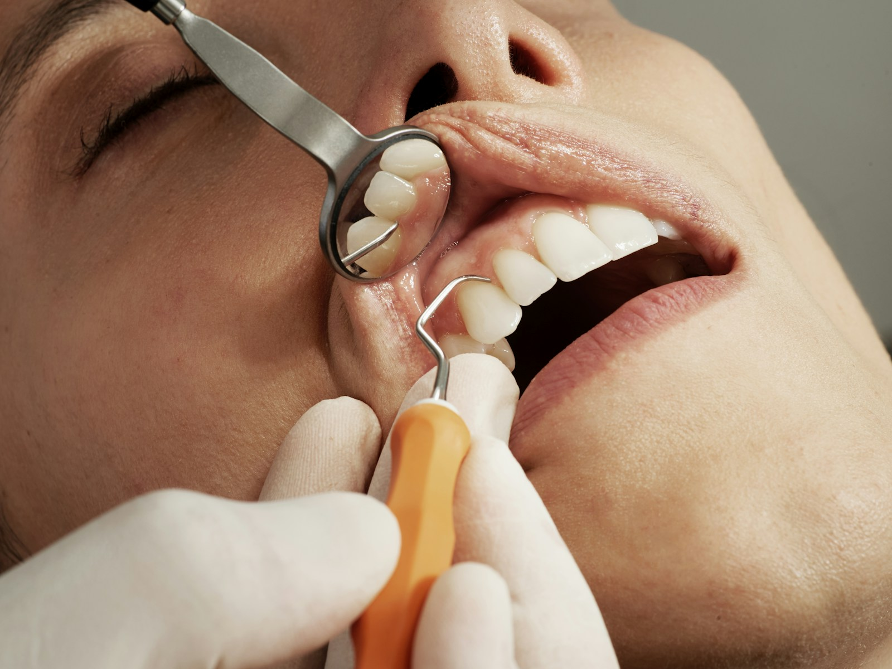

Aprender.
Questionar.
Um espaço para aprofundar o estudo da Ortodontia e da Ortopedia Funcional dos Maxilares.
Curiosidade que conecta. Ciência que inspira.
Uma formação que vai além da sala de aula.
A LAOMAX é um ponto de encontro para quem quer ampliar o olhar sobre a Ortodontia e a Ortopedia Funcional dos Maxilares.
Descubra o que nos moveUm espaço para aprofundar o estudo da Ortodontia e da Ortopedia Funcional dos Maxilares.
Leitura científica e boas perguntas como ponto de partida para construir conhecimento.
A aproximação entre universidade e comunidade como horizonte da formação acadêmica.

Imagem ilustrativa · OdontologiaEstudar é aprender a olhar com mais atenção. Para a ciência, para as perguntas e para as pessoas.
Conheça a nossa propostaA agenda será divulgada por aqui assim que os próximos encontros forem confirmados.
PubMed e SciELO: dois pontos de partida para explorar a literatura em Odontologia.
Um roteiro simples para organizar seu fichamento e levar uma discussão melhor para o grupo.
Como combinar conceitos, refinar resultados e guardar uma estratégia de busca.